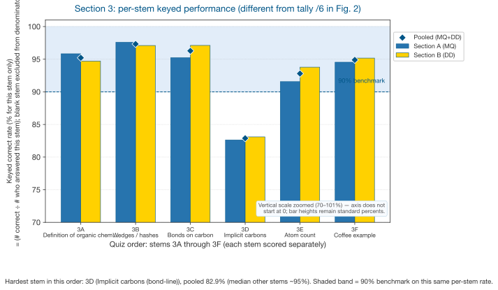
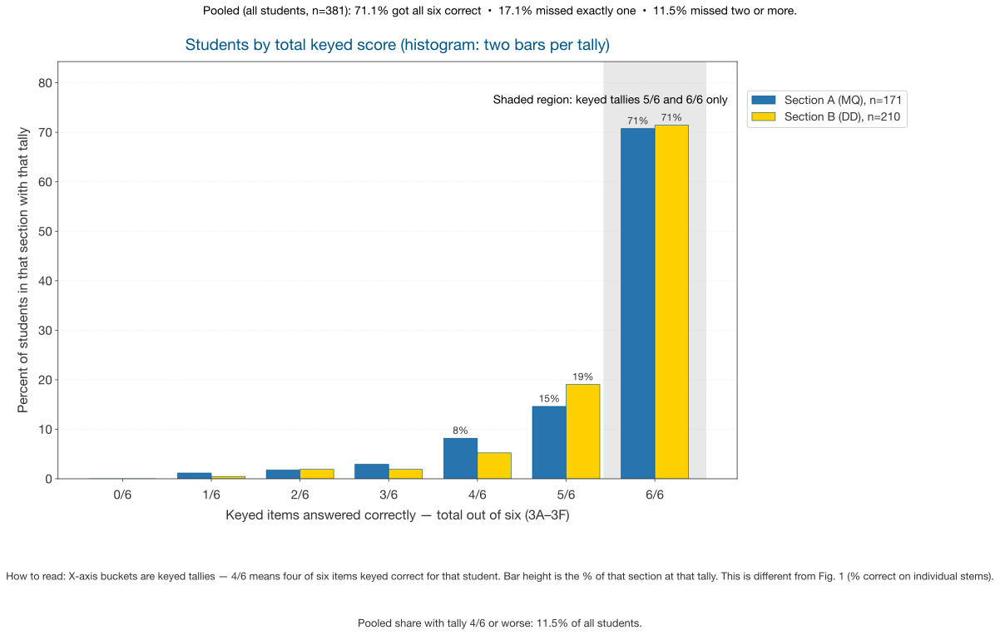
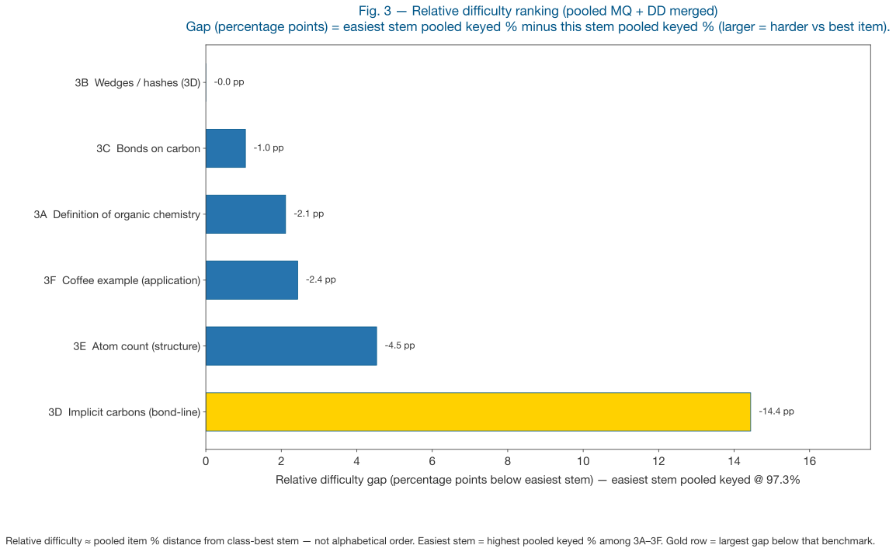
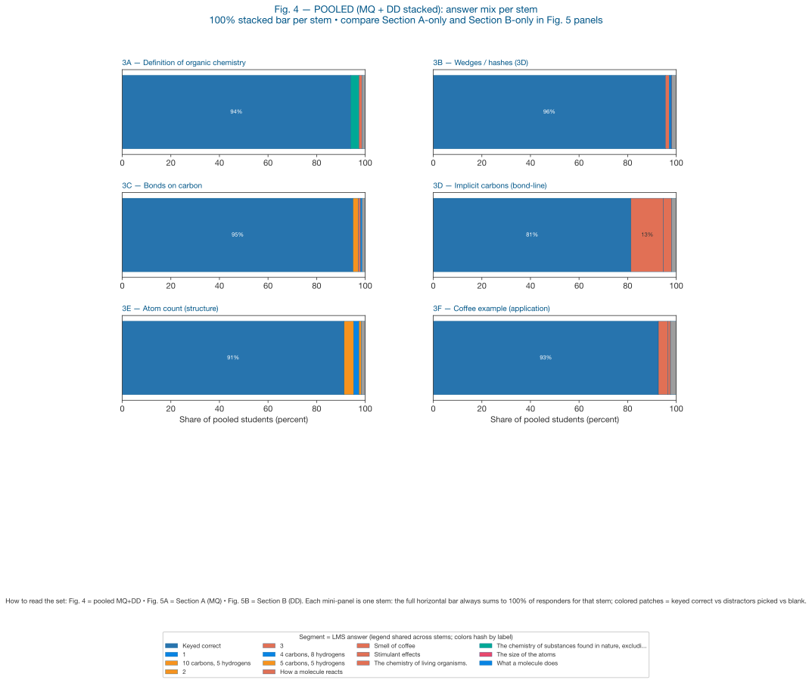
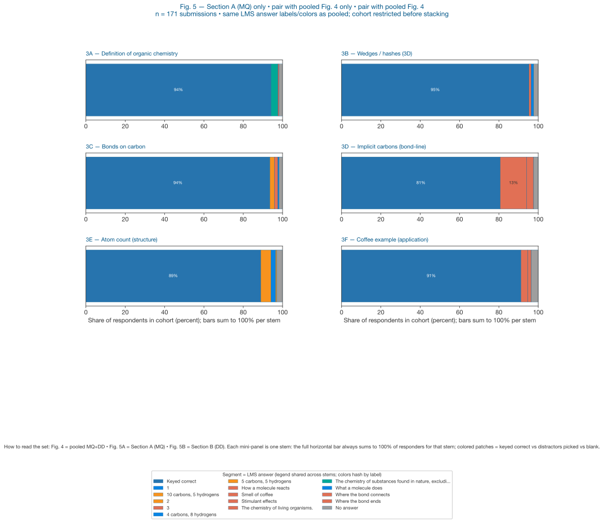
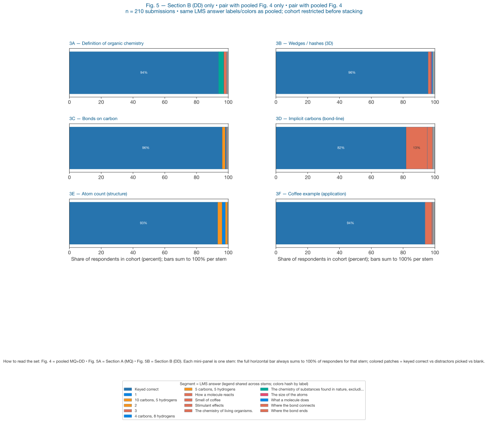
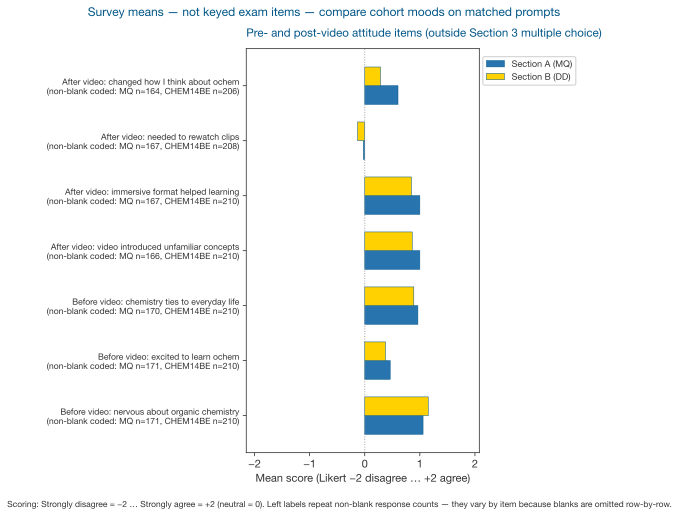
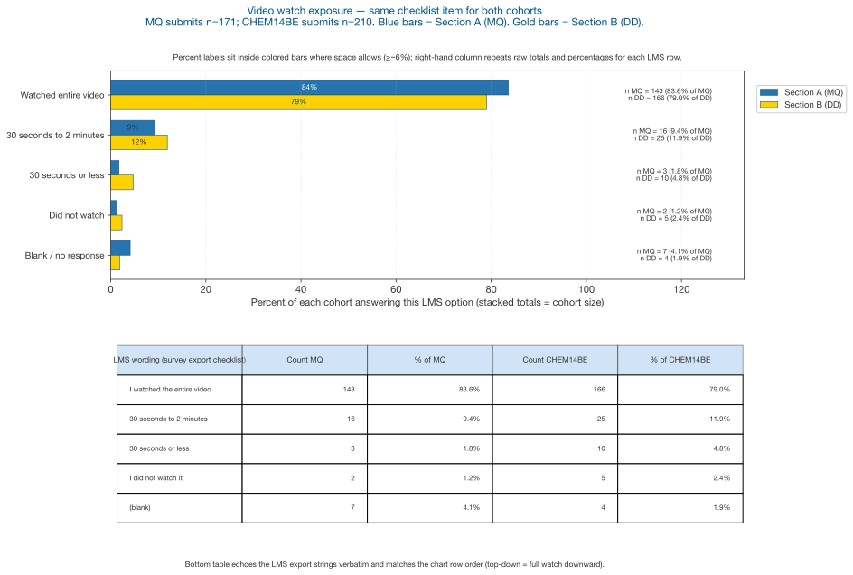

Organic Chemistry Video Quiz — Student Data Summary
Snapshot from anonymized quiz exports with two cohort labels: Section A (MQ), Section B (DD). Responses: Section A 171 submits; Section B 210 submits (381 pooled).
Purpose: Stakeholder briefing on keyed performance on Section 3 items (3A–3F), totals, distractor mixes, and other survey prompts.
Video: instructional video (Google Drive)
Data sources: Section A ← MQ_Organic Chemistry Video Quiz Student Analysis Report anon.csv; Section B ← DD_CHEM14BE_Organic Chemistry Video Quiz Student Analysis Report_Anonymous.csv.
Scoring: For 3A–3F, responses were coded 1 = keyed correct option vs 0 = other chosen response. Blank stems are reported separately and excluded from item percentages.
Figures
Authoring: this file is the template (Organic_Chemistry_Video_Quiz_Report.template.html) with <img src="figures/…svg"> placeholders. Run python3 build_html_report.py after charts to generate Organic_Chemistry_Video_Quiz_Report.html with SVG pasted into the HTML (charts are not separate image requests). PNGs in figures/ stay for Markdown/embeds.






Section 3 — binary keyed results (% correct)
| Item | Topic | Section A — % (n answered) | Section B — % (n answered) | Combined — % (n) | Blanks A/B |
|---|---|---|---|---|---|
| 3A | Definition | 95.8% (168) | 94.7% (208) | 95.2% (376) | 7 / 2 |
| 3B | Wedges/hashes | 97.6% (167) | 97.1% (207) | 97.3% (374) | 8 / 3 |
| 3C | Bonds on C | 95.2% (168) | 97.1% (208) | 96.3% (376) | 8 / 2 |
| 3D | Carbons in shorthand | 82.6% (167) | 83.1% (207) | 82.9% (374) | 8 / 3 |
| 3E | Structure count | 91.6% (166) | 93.8% (209) | 92.8% (375) | 9 / 1 |
| 3F | Coffee molecules | 94.5% (165) | 95.2% (207) | 94.9% (372) | 12 / 3 |
- 3D (implicit carbons / line-angle) weakest for both sections (~83% pooled).
- Between-section differences are modest on content items.
- About 71% of students (271 / 381) answered all keyed items correctly (6 of 6), when counting students with any answered stem.
Other survey (non-binary)
Likert items use −2 (strongly disagree) through +2 (strongly agree); means below summarize cohort mood. Figures show the same aggregates as visuals; headline tables replicate the LMS export totals.


Numeric recap — same aggregates as Fig. 7–8 (export wording may differ slightly from chart labels).
Pre-video (first occurrence)
| Stem | Section A mean | Section B mean |
|---|---|---|
| Nervous about organic chemistry | +1.06 | +1.15 |
| Excited to learn ochem | +0.46 | +0.38 |
| Chemistry ↔ real world | +0.96 | +0.89 |
Post-video perceptions
| Stem | Section A | Section B |
|---|---|---|
| Video introduced unfamiliar concepts | +1.00 | +0.86 |
| Immersive format helped | +1.00 | +0.85 |
| Needed to rewatch | −0.02 | −0.13 |
| Changed how I think about ochem | +0.60 | +0.29 |
Watch time (counts)
| Response | Section A | Section B |
|---|---|---|
| Watched entire video | 143 | 166 |
| 30 s–2 min | 16 | 25 |
| 30 s or less | 3 | 10 |
| Did not watch | 2 | 5 |
Implementation notes
- HTML stripped from LMS MC cells before matching keyed text.
- Exports are anonymous — Section A ↔ MQ CSV; Section B ↔ DD CSV.
- Open-ended essays not summarized — still in raw CSV.
Prepared for stakeholder review · Source quiz exports (March 2026 submissions).